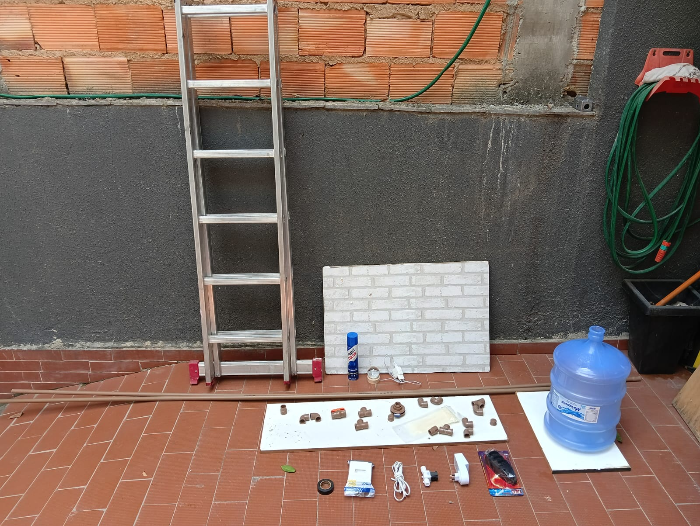
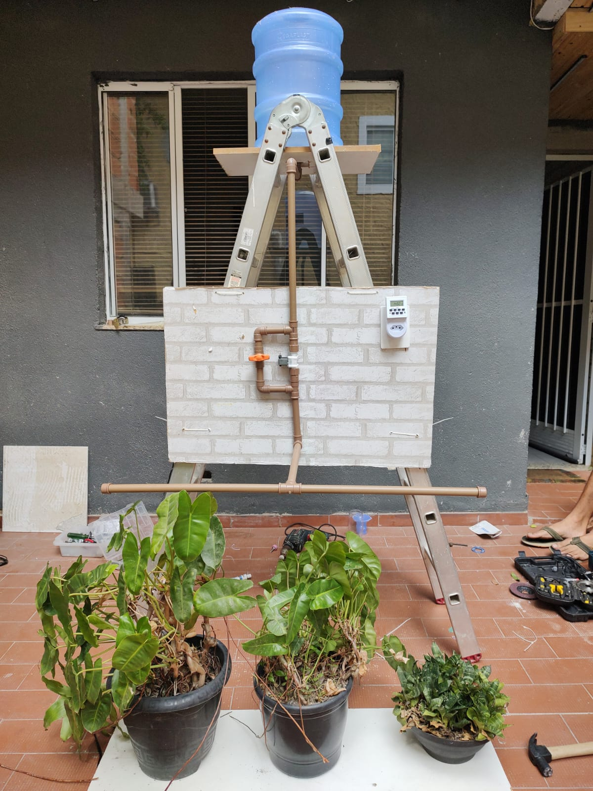

Nosso primeiro sistema de irrigação automático.
Nosso primeiro sistema de irrigação é bem simples, utilizamos materiais como canos, galão de 20L, e os principais sendo um solenóide 110V e uma tomada temporizadora, que são a base do funcionamento automático do sistema. Fizemos também um manual, que basta apenas ligar o registro e a irrigação acontece.
Colocamos o galão em cima de um cano PVC e sobre uma madeira com um furo embaixo levando ao sistema, deixamos o galão em cima do PVC, pois a pressão iria ser maior, mas inicialmente iria ser apenas sobre a madeira. Após realizarmos o cálculo da vazão, observamos que cada planta precisa de uma certa quantidade de água, para isso, fizemos 6 furos para as saídas de água, um para a planta menor, dois para a do meio e três para a maior.
As plantas utilizadas no projeto são Philodendron e duas Sansevieria, também conhecida como espada de São Jorge. Checamos a vazão de cada uma utilizando um copo medidor, e deixamos o sistema aberto por 120 segundos (2 minutos), assim fazendo precisamente o cálculo da vazão.
 